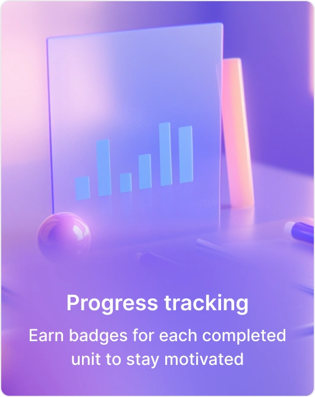
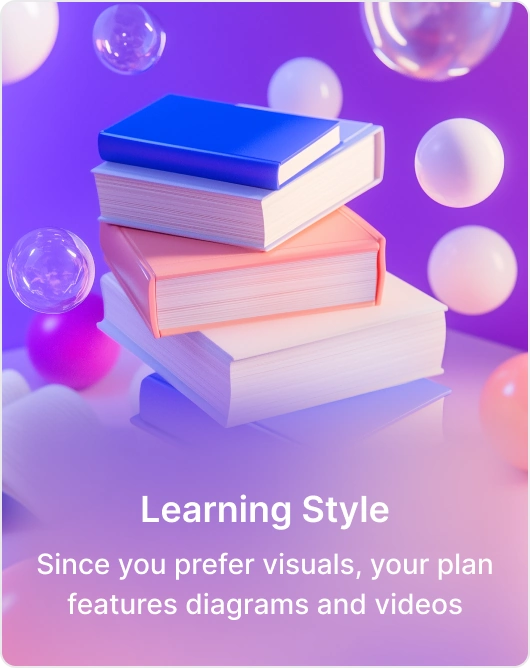
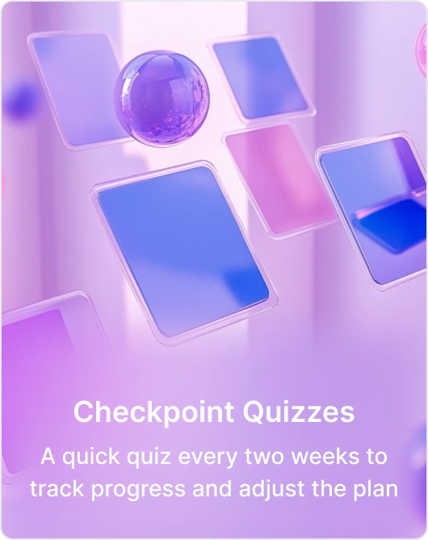
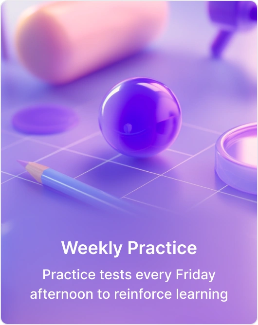
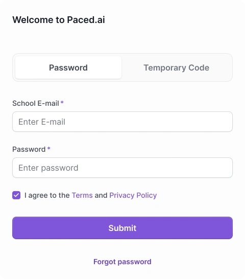
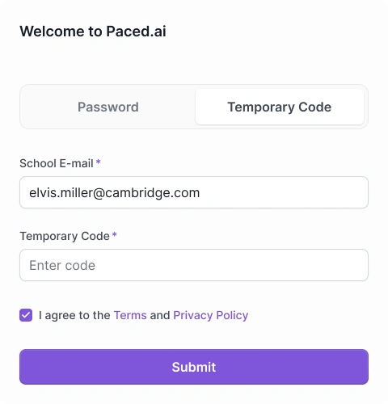
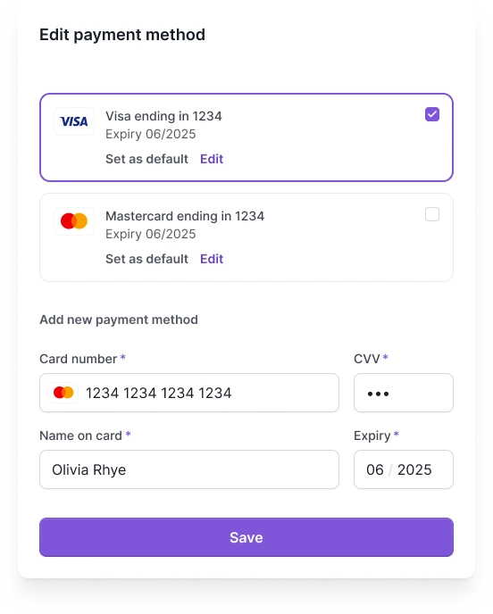
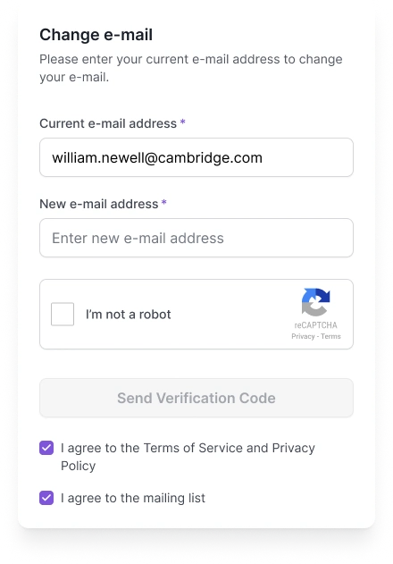
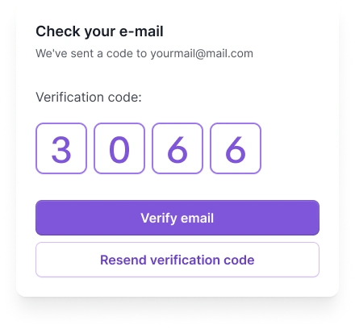

paced.ai — учебная платформа
Платформа для школ и университетов. Я спроектировал курсы, материалы, практику и оценивание — от подготовки занятия до обратной связи.
Курс разбит на темы, занятия и задания
В боковой панели видна программа, в рабочей области — выбранная тема. Материалы, практика и задания находятся внутри своих разделов. Статусы показывают, что уже выполнено и что доступно дальше.
Прогресс связан с конкретными занятиями
Общий результат можно разложить по темам и отдельным активностям. Из обзора пользователь возвращается к материалу, который нужно повторить.
Личный план помогает удерживать темп
Прогресс, удобный формат занятий, короткие проверки и регулярная практика дополняют основную программу.




Подготовить материал к занятию
Преподаватель выбирает место в курсе, добавляет источник и просматривает результат обработки. Редактирование и действия AI находятся рядом с содержанием.
Материал остается связан с курсом
Изучение, обсуждение и проверка знаний опираются на содержание курса. Общая навигация сохраняет связь с темой при переходах между этими действиями.
Календарь занятий
Месяц помогает увидеть нагрузку, неделя — распределить занятия, день — проверить время конкретного события. Учебные задачи остаются рядом при смене вида.
Работы и оценки студентов собраны в одном списке
Для каждой работы видны результат, рекомендация AI и итоговая оценка. Статусы помогают понять, какие ответы еще нужно проверить.
Небольшие действия тоже требуют проработки
Вход, подтверждение почты и изменение оплаты собраны в отдельные окна. Состояния полей, проверки и подтверждения помогают пройти действие до конца.





Важные настройки собраны в профиле
Почта, безопасность, уведомления и подписка доступны на одном экране. Из него открываются короткие сценарии изменения данных.
Дизайн-система задает общие правила для всех экранов
Навигация, быстрое меню, поля, кнопки и индикаторы прогресса собраны из повторно используемых элементов. Это помогает сохранять одинаковое поведение в разных частях продукта.
Общие компоненты, типографика и состояния интерфейса
У каждого компонента есть состояния для реального сценария
Пустая и заполненная форма, загрузка файла, обработка материала, выбор значения и подтверждение. Варианты собраны рядом, чтобы их можно было проверить и изменить как систему.
Как устроена платформа
Основные сценарии соединены в учебный цикл. Подготовленный курс становится планом занятий; выполненные работы — оценками и обратной связью.
Подготовить курс
Пройти занятия
Проверить результат
Оценка и комментарий возвращаются в учебный план
экрана в проекте
экземпляров компонентов
наборов вариантов
Александр Семеновский
Проектирую цифровые продукты и выпускаю свои приложения. Работал с командами из Европы и США.
Университет ИТМО
Бакалавриат по дизайну интерфейсов, 2020–2023.
Магистратура по продуктовому дизайну с отличием, 2023–2025.